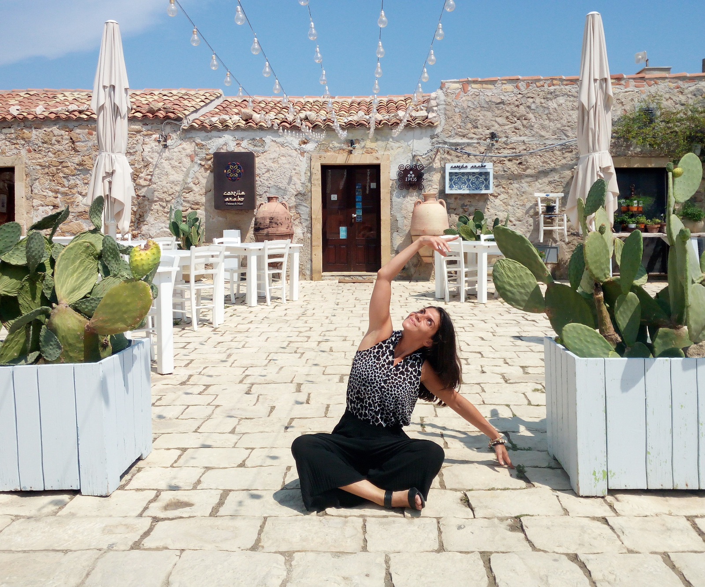
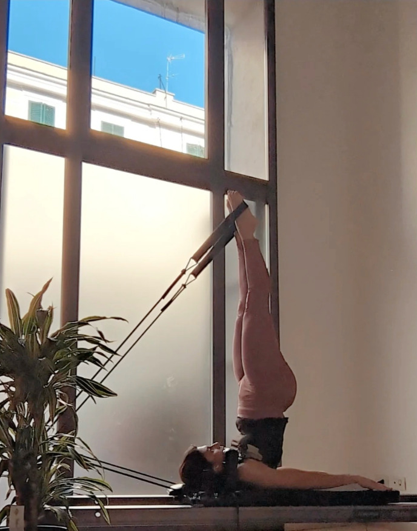

Il mio percorso
Conoscere il corpo per viverlo meglio.

Sono Mary Ceraulo, chinesiologa e professionista del movimento.
Il mio percorso nasce da una formazione in Scienze Motorie, Sport e Salute e dalla specializzazione in Scienze e Tecniche dell’Attività Motoria Preventiva e Adattata. Nel tempo ho arricchito la mia formazione come preparatore fisico e preparatore atletico di tennis, specializzandomi inoltre in Pilates Matwork, Reformer, gravidanza e attività motoria per la terza età.
Ma il mio modo di lavorare non nasce soltanto dallo studio. Nasce soprattutto dalla curiosità di capire come funziona il corpo, come si muove e perché lo fa in un determinato modo.
Negli anni ho approfondito anatomia, fisiologia e biomeccanica, concentrandomi in particolare sulla colonna vertebrale, sulla postura e sulla propriocezione. Ho studiato il corpo partendo anche da ciò che spesso sembra un dettaglio, come l’appoggio del piede e la distribuzione del peso, per comprendere meglio disallineamenti, compensi e modalità di movimento. Questa parte di studio è fondamentale anche nella preparazione fisica dell’atleta, dove forza, stabilità centrale e consapevolezza neuromuscolare contribuiscono a rendere il gesto atletico più efficiente. Una buona core stability permette infatti di migliorare il controllo del corpo, ottimizzare la trasmissione delle forze e sostenere una migliore esecuzione del gesto sportivo, favorendo anche una maggiore efficienza energetica.
Ho approfondito inoltre il rapporto tra movimento e alcune problematiche della colonna, come ernie e disturbi correlati, problematiche del nervo sciatico, e il ruolo del core, del pavimento pelvico e della Power House nel controllo e nella stabilità del corpo.
Un’attenzione particolare l’ho dedicata alla respirazione, alla tecnica Mézières e al lavoro di decompressione e riequilibrio della colonna, così come al modo più consapevole di allenare l’addome, concentrandomi in particolare sul muscolo trasverso dell’addome, parte fondamentale della muscolatura profonda del tronco e importante per il controllo e la stabilità del corpo.
Movimento e circolazione

Un altro ambito di cui negli anni mi sono appassionata è quello legato al benessere delle gambe e della circolazione, con attenzione al movimento come strumento di supporto alla mobilità dei liquidi, al drenaggio e alla riduzione della sensazione di pesantezza e ristagno, contribuendo a migliorare l’aspetto delle gambe e alcuni inestetismi associati a ristagno e alterazioni della circolazione, come la cellulite.Questo interesse nasce anche da una condizione circolatoria importante che vivo in prima persona. Da qui ho iniziato a dedicare tempo a seminari, ricerche scientifiche e sperimentazioni pratiche, studiando e mettendo alla prova su di me differenti approcci al lavoro corporeo. Ho imparato così a osservare come il corpo risponde a esercizi, respirazione, mobilità, lavoro muscolare e diverse tecniche, cercando di comprendere non soltanto cosa fare, ma soprattutto come e perché farlo.
Anche la diastasi addominale ha rappresentato un importante ambito di approfondimento, sia attraverso lo studio sia attraverso il mio percorso personale. Ho studiato la relazione tra respirazione, pressione, postura e movimento, applicando su di me un percorso di allenamento sempre più consapevole. Soprattutto attraverso il Pilates ho imparato a mantenere costante l’attenzione sul centro del corpo e sull’attivazione della Power House, portando questa consapevolezza nel modo stesso di eseguire ogni esercizio, con precisione e concentrazione.
È dall’incontro tra studio, esperienza, osservazione e pratica che nasce il mio modo di allenare.